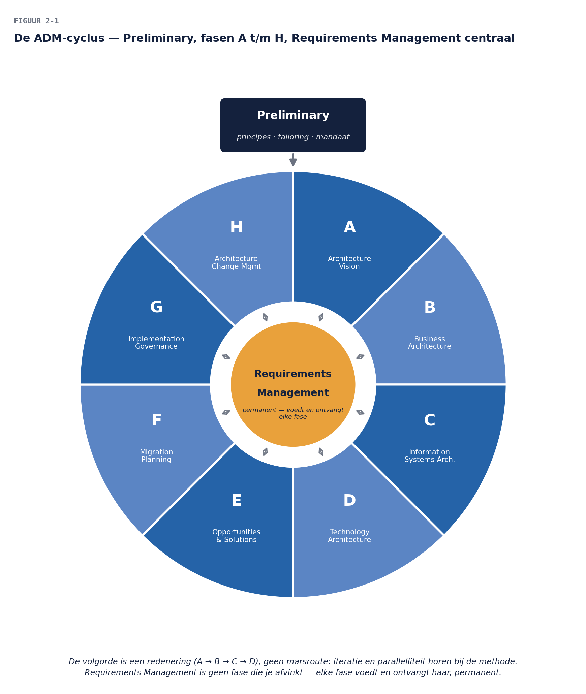

01
Casus: “Doe het dan maar volgens de methode”
⏱ 10 minDe pitch die je in deel 1 schreef, is aangeslagen. De directie van Meridiaan heeft de architectuurfunctie een eerste concrete opdracht gegeven, met een venijnige staart: “Het werkgeversdossier moet opnieuw. Laat maar zien hoe dat gaat als het wél volgens een methode loopt.”
Dat is precies waarvoor de ADM bestaat: een herhaalbare route van ambitie naar gerealiseerde verandering, waarbij elke stap voortbouwt op de vorige en niets belangrijks aan het toeval wordt overgelaten. In dit deel doorlopen we de hele cyclus één keer op verkenningsdiepte, steeds met de vraag: wat had deze fase bij WGP 2.0 voorkomen? De delen 3 t/m 9 zoomen daarna per fase (of fasegroep) in.

Controlevragen
Uit Werkboek deel 2, Opdracht 1, Opdracht 2
1Kies één uitspraak waarvan je de toewijzing het lastigst vond en beschrijf in drie zinnen welke twee fasen streden en wat de doorslag gaf.Toon antwoord
1 → A (scope-afbakening, Statement of Architecture Work). 2 → G (afwijkingsbeoordeling, Governance Log). 3 → H (wijziging beoordelen, eventueel nieuwe cyclus). 4 → D (technologiestandaarden; het vastleggen gebeurt in de Standards Library). 5 → Requirements Management (nieuw requirement tijdens de rit; besluit over opname raakt A/scope). 6 → E/F (volgorde en afhankelijkheden: E clustert, F plant — beide goed rekenen mits beargumenteerd). 7 → B (bedrijfsfuncties/capabilities). 8 → E (hergebruikbesluit ABB→SBB; verdedigbaar is ook C-applicatie als het om het in kaart brengen van de dienst gaat). Nabesprekingspunt: uitspraken 5 en 8 zijn bewust dubbelzinnig — de discussie daarover ís het leerdoel.
2“Als we gewoon alle fasen netjes hadden doorlopen, was WGP 2.0 gelukt.” Val deze stelling aan in maximaal vijf zinnen. (Hint: methode ≠ garantie; denk aan mandaat, vakmanschap, en de Preliminary-vraag of de organisatie er klaar voor wás.)Toon antwoord
a. Modelmapping: B3 → C-applicatie (baseline-landschap); B5 → D + Preliminary (standaarden + het ontbreken van een functie die ze stelt); B7 → C-data; B9 → G (plus Preliminary: er was geen functie om G te beleggen); B11 → A + Requirements Management; B12 → E (hergebruikbesluit) met C-applicatie als voorwaarde; B14 → A (visie) + B–D (targetarchitecturen). b. Vrijwel elke bevinding is dubbel te verdedigen; het scherpst B5 en B9, die zowel naar een fase als naar Preliminary wijzen. Leerpunt: fasegebreken en functiegebreken (deel 1, opdracht 1c) hangen samen — een fase kan alleen bestaan als de functie bestaat die haar uitvoert. c. Aanvalslijnen: (1) de methode veronderstelt mandaat en vakmanschap die er niet waren — Preliminary was nooit gedaan; (2) fasen “netjes doorlopen” zonder iteratie is schijnzekerheid: het requirement uit opdracht 5 was ook dan pas onderweg opgedoken; (3) de methode dwingt geen kwaliteit af, zij maakt gebreken vroeger zichtbaar — dat is veel waard, maar iets anders dan succesgarantie. Sterke antwoorden noemen minstens twee van deze drie.